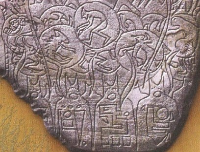

Old Ones
| Old Ones | |
|---|---|
 Carved fragment from an Exodite world, thought by Ordo Xenos savants to record the Old Ones Artwork © Games Workshop | |
| Classification | Xenos; elder race (extinct or departed) |
| Era | Before c. 60,000,000 years before M41[a] |
| Creations | The Aeldari; the Krork (forebears of the Orks); the webway; the Blackstone Fortresses; many lesser races |
| Enemies | The Necrontyr and the C'tan |
| Fate | Destroyed or gone after the War in Heaven |
The Old Ones were an ancient xenos race that ruled much of the galaxy tens of millions of years before mankind. They were masters of the Warp and of the shaping of life. They made the webway, seeded countless worlds with life, and are believed to have made the Aeldari and the Krork, from whom the Orks descend, as soldiers for their last war. Almost nothing of their own culture survives, and what the Imperium knows of them comes from Aeldari myth, Necron records and a handful of relics.[1][2]
Their downfall came in the War in Heaven, a war against the Necrontyr and the star-gods called the C'tan that ended about sixty million years before the 41st millennium. The Old Ones lost. Their last great works, the Warp-born races they made, brought on the storms and predators of the Immaterium, and some savants trace the first daemons to the psychic powers unleashed in that war.[2][3]
Nature
[edit]No Imperial record contains a reliable description of an Old One. Some Aeldari texts describe them as reptilian, and earlier Imperial accounts identify them with a vanished race the Inquisition once called the Slann; the Ordo Xenos now treats this link as unproven. What is agreed is that they were long-lived, patient and psychically gifted, and that they used the Warp the way mankind uses fire. Their lifespans were so long that the short-lived Necrontyr looked on them with envy and hatred.[1][2]
Works
[edit]The webway
[edit]The Old Ones built the webway, a labyrinth of tunnels between realspace and the Warp that let them cross the galaxy without the dangers of open Warp travel. It is still used by the Aeldari, the Harlequins and the Drukhari of Commorragh, and the Emperor of Mankind tried to take part of it for mankind in the Imperial Webway Project of the early 31st millennium.[1]
Seeding of life
[edit]Imperial and Aeldari scholars agree that the Old Ones spread life to many worlds, either by planting it or by guiding species already there. Several races later met by the Imperium may owe their existence to them, among them the Jokaero and, some say, mankind's own distant ancestors, though the Ecclesiarchy rejects that view.[3]
The warrior races
[edit]As the War in Heaven turned against them, the Old Ones made new races to fight for them. The best known are the Aeldari, a psychically gifted people, and the Krork, a war-race whose degenerate descendants are the Orks. Imperial texts also credit them with the Blackstone Fortresses, star-killing stations later found near the Eye of Terror.[2][4]
Fall
[edit]The Necrontyr, who had fought the Old Ones for a long time without success, accepted the C'tan as their masters and were made into the deathless Necrons. The new enemy was immune to the Old Ones' psychic arts, and the war turned against them. Aeldari tradition holds that their use of the Warp grew more desperate, that it filled the Immaterium with storms and predators, and that a plague of Enslavers, psychic parasites that came through their own gates, finished their empire. The surviving Old Ones disappeared. Whether any still live, in some far region or beyond the galaxy, is unknown.[2][3]
The Aeldari inherited the Old Ones' place and ruled the galaxy for millions of years, until their own Fall in M30.[1]
Legacy
[edit]Old One relics are among the most dangerous objects the Imperium knows of. The Blackstone Fortresses were used by Abaddon the Despoiler in the Gothic War (139–160.M41) and in the Fall of Cadia in 999.M41. The Harlequins are said by their own lore to guard Old One secrets in the Black Library. The Ordo Xenos keeps its knowledge of the race under seal.[4][1]
Timeline
[edit]| Date (estimated) | Event |
|---|---|
| Before c. 65,000,000 years before M41 | Old One empire at its height; the webway is built |
| c. 65,000,000–60,000,000 years before M41 | The War in Heaven against the Necrontyr and the C'tan |
| Late in the war | The Aeldari and Krork are made |
| c. 60,000,000 years before M41 | The Old Ones disappear; the Necrons enter the Great Sleep |
| 139–160.M41 | Blackstone Fortresses fought over in the Gothic War |
See also
[edit]
Notes
[edit]- ^ Imperial savants give only rough figures for events before the Necron Great Sleep. All dates in this article are estimates counted back from the 41st millennium.
References
[edit]- ^ a b c d e Watson, Ian. Chaos Child (novel). Black Library. Goto, C.S.. Eldar Prophecy (novel). Black Library, pg. 151.
- ^ a b c d e Rath, Robert. The Infinite and the Divine (novel). Black Library, Ch. 3. Codex: Necrons (7th Edition), pp. 9, 24-25, 31, 61. Games Workshop.
- ^ a b c Codex: Dark Eldar (5th Edition), pg. 8. Games Workshop. Codex: Necrons (5th Edition), pp. 6-7, 59. Games Workshop.
- ^ a b Codex: Chaos Daemons (4th Edition), pg. 18. Games Workshop. Codex: Eldar (4th Edition), pg. 12. Games Workshop.